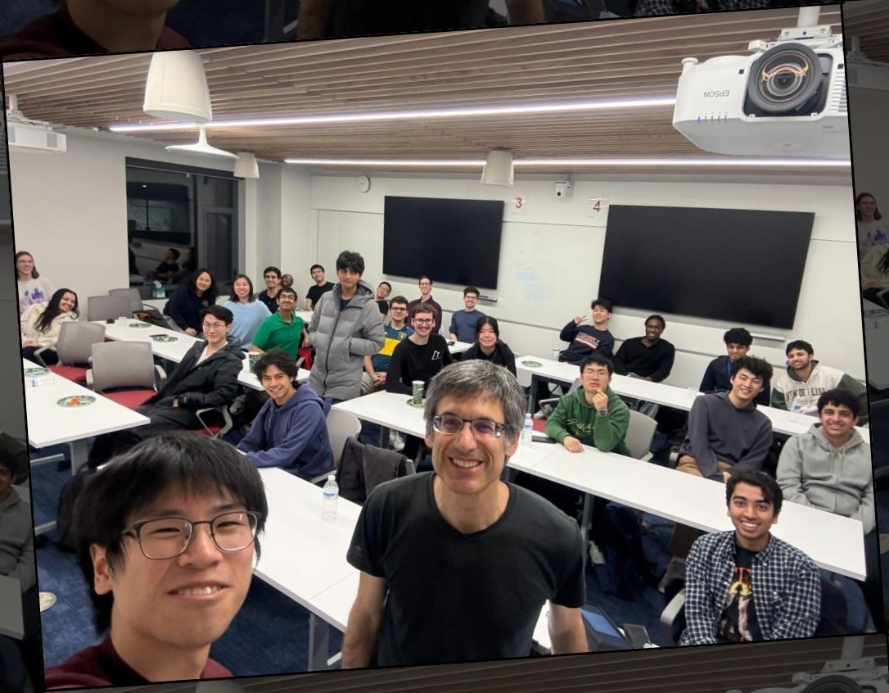
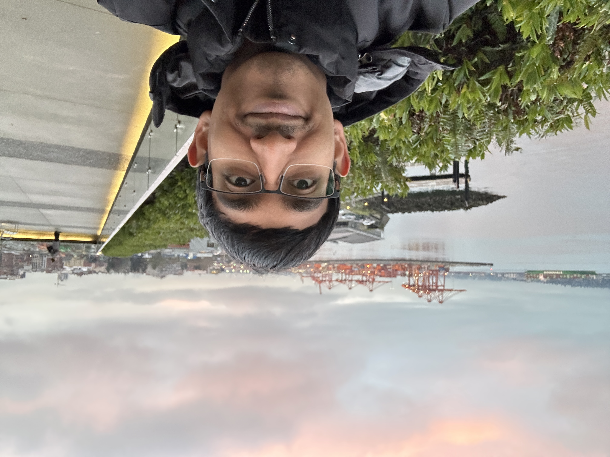
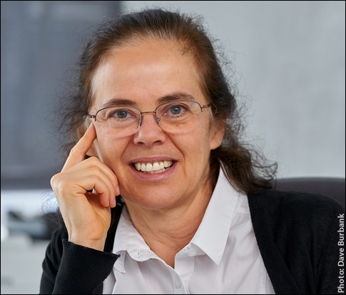

Welcome to the Cornell CS Theory Club!
We are a community of Cornell students passionate about theoretical computer science (TCS)! We hold weekly meetings to discuss anything that sparks curiosity and gets us thinking like theoretical computer scientists. Each semester, we host weekly talks by professors, graduate students, and undergraduates presenting cutting-edge research, motivating open problems, and sharing their personal academic journeys.
Come to any of our meetings! We warmly welcome anyone who is interested—undergraduate or graduate—from any area of study. Whether you're already doing research or curious about proofs, algorithms, and complexity, there's a place for you here.
Weekly Meeting Information
Wednesdays at 5:00 PM — CIS 373 (Bill & Melinda Gates Hall)
5:00 – 5:15 PM: Reception & Social (🍕 Free pizza provided!)
5:15 – 6:15 PM: Talk and Q&A
Join Our Mailing List: Send an email with subject line join to
CS-THEORY-UGRAD-L-REQUEST@cornell.edu
(Lyris instructions).
📅 Fall 2026 Schedule
View upcoming weekly faculty and student guest lectures, dates, and abstracts.
📖 About the Club
Learn about our meeting format, mathematical maturity recommendations, and FAQs.
👥 Leadership Team
Meet our executive board officers and faculty advisor Prof. Éva Tardos.

Topics We Explore
Theoretical computer science spans fundamental questions about computational power, limits, and efficiency:
Algorithms
Design, analysis, and limits of efficient algorithms and approximation schemes.
Complexity Theory
Understanding computational hardness, P vs NP, and structural complexity.
Cryptography
Lattice-based cryptography, zero-knowledge proofs, and secure computation.
Quantum Computing
Quantum algorithms, quantum error correction, and quantum complexity.
Learning Theory
Statistical and computational foundations of generalization and privacy.
Algorithmic Game Theory
Incentives, equilibria, mechanism design, and strategic behavior in networks.
Spring 2026 Talks Spotlight
We host talks every Wednesday during the semester. View the full semester schedule with all abstracts →


See All 10 Talks for Spring 2026 →
Leadership Team
The CS Theory Club is organized by undergraduate students with guidance from faculty in the Department of Computer Science. Learn more about the team →

Lawrence Ozoigbo
Co-President

Nancy Chen
Co-President

Ahan Mishra
Web Maintainer

Elizabeth Pfauth
Social Co-Chair, Web Maintainer
Ching Huang
Social Co-Chair, Secretary

Prof. Éva Tardos
Faculty Advisor